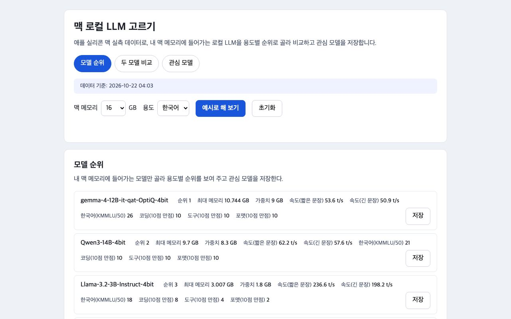
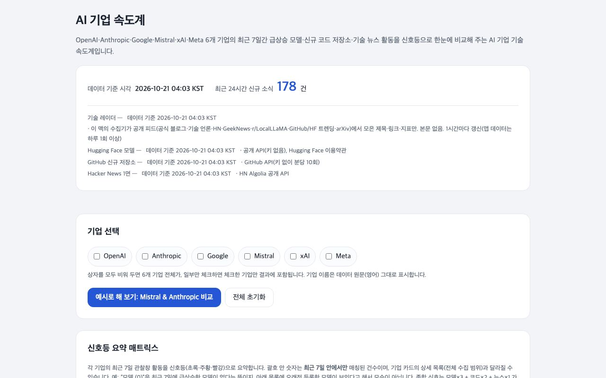
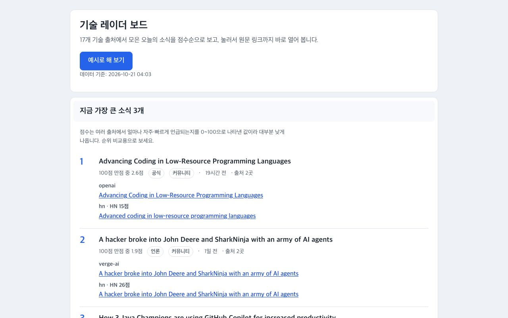
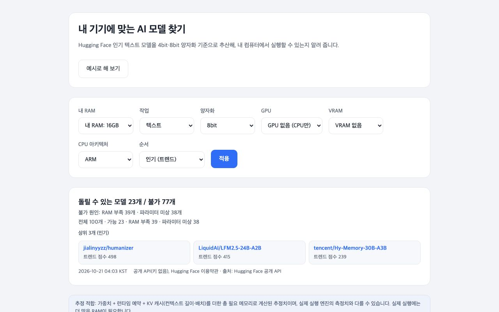
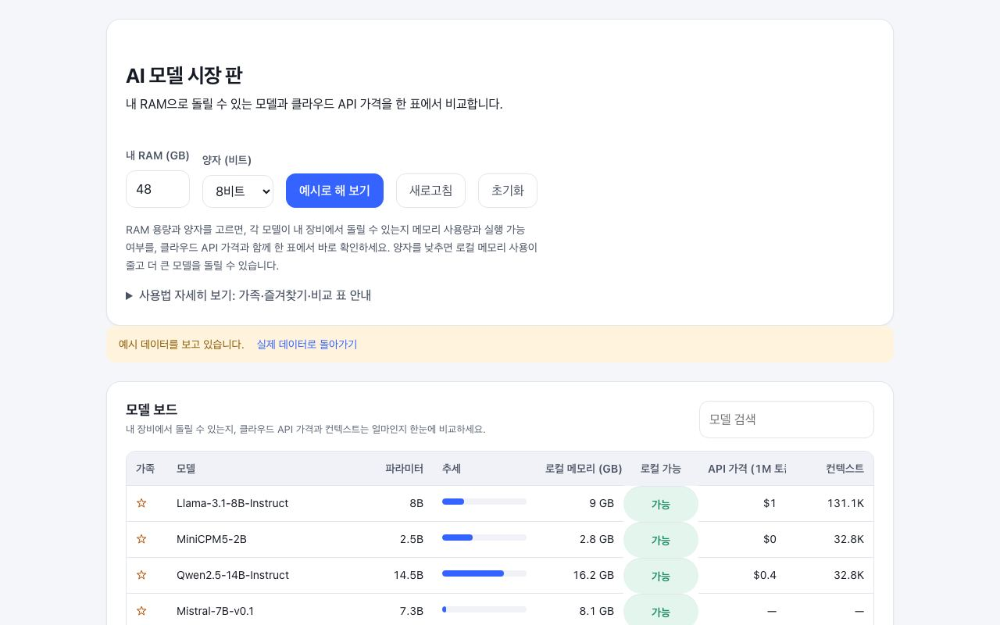
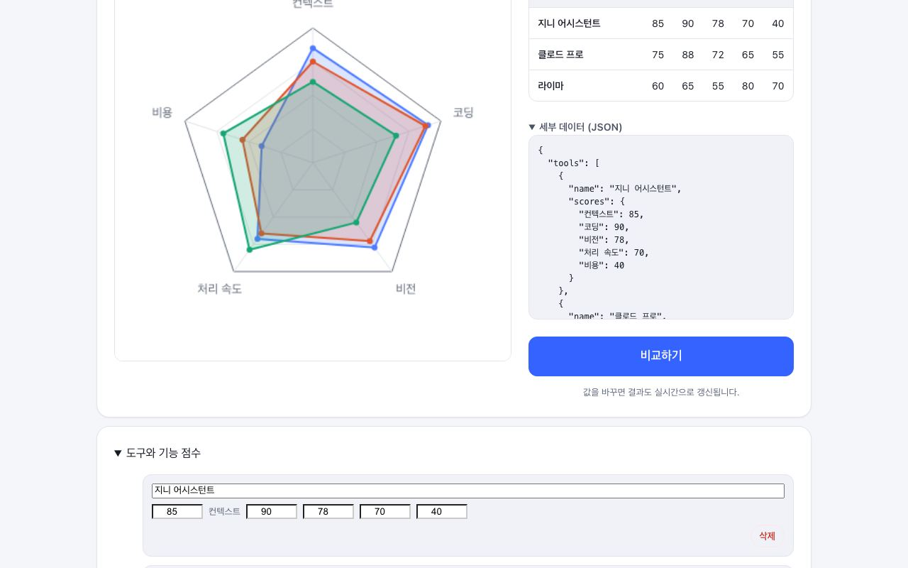
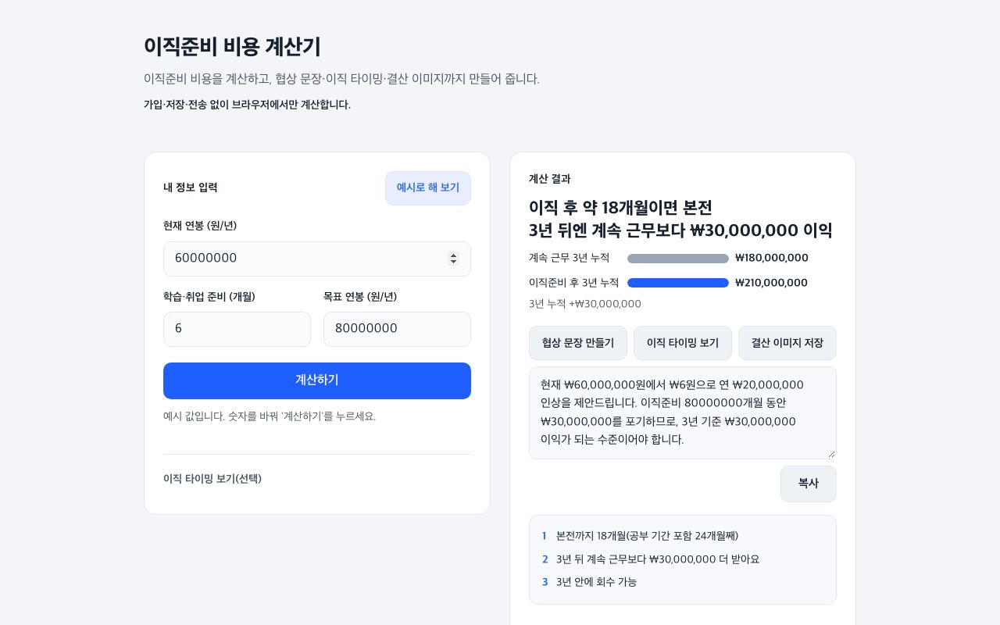
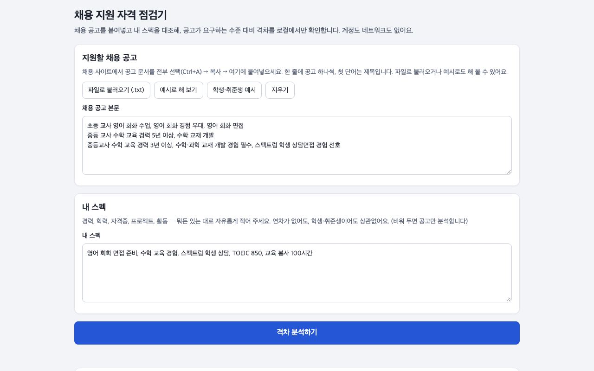
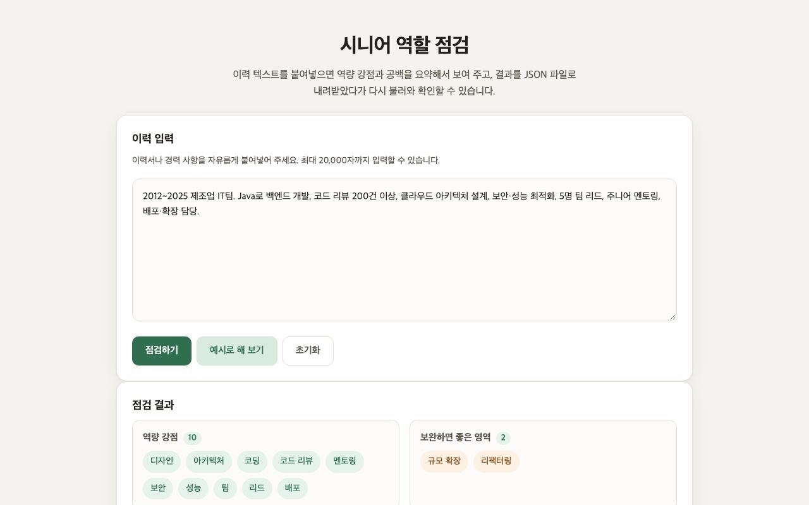

앱 실험실
저희 AI 스튜디오가 매일 아이디어를 찾아 만든 웹앱 초안 가운데, 써 볼 만한 것만 모았습니다. 설치 없이 바로 열어 보세요. 초안이라 다듬어지지 않은 부분이 있을 수 있어요.
AI·로컬 모델

맥 로컬 LLM 고르기
이 앱은 Mac Studio M5 Max 48GB에서 직접 측정한 로컬 LLM 실측 데이터를 기반으로, 내 맥 메모리에 들어가는 모델만 골라 용도(한국어·코딩·도구·속도)별 순위를 보여 주고 두 모델을 나란히 비교하

AI 기업 속도계
OpenAI·Anthropic·Google·Mistral·xAI·Meta 6개 기업의 7일 관찰창(모델 3배, 레포 2배, 뉴스 1배 가중) 속도를 신호등 매트릭스로, 모델·레포·소식 3중 뷰로 보여 주는 앱입니다.

기술 레이더 보드
17개 기술 출처가 매일 수집한 기술 소식 데이터를 받아, 지금 가장 큰 소식 3개와 점수·최신순 소식 목록을 대시보드에서 보여주는 앱입니다.

내 기기에 맞는 AI 모델 찾기
Hugging Face 인기 텍스트 모델 100개의 파라미터를 4bit·8bit 양자화로 환산해, 내 PC RAM 을 한 번만 선택하면 그 기기에 실행할 수 있는 모델(추정 적합 기준)을 한국어 대시보드로 보여 주는

AI 모델 시장 판
매일 갱신되는 Hugging Face 인기 모델과 OpenRouter API 가격을 모델 계열로 짝지어 한 표로 보여 주며, 내 RAM(GB)과 양자(4/8/16비트)를 고르면 로컬 실행에 필요한 메모리와 가능 여부

인공지능 기능 비교 매트릭스
AI 도구의 기능별 점수를 입력해 레이더 차트로 도구 간 기능 차이를 직관적으로 비교할 수 있는 앱.
일·커리어

이직준비 비용 계산기
재교육을 고려 중인 소프트웨어 엔지니어가 현재 연봉, 학습 기간, 목표 직군 연봉을 입력하면 재교육으로 발생하는 순이익과 손익분기점을 바로 계산해 보여주는 앱입니다.

채용 지원 자격 점검기
교육 분야 채용 공고 텍스트를 업로드하면 로컬에서 각 공고의 요구 역량과 필수/선호 구분, 빈도 및 차이점을 시각화해 지원 전 교육 기관이 중시하는 핵심 역량을 빠르게 파악할 수 있는 앱.

시니어 역할 점검
내 이력 텍스트를 입력하면 AI가 내 역량 강점과 공백을 요약해서 보여주고, AI 결과를 JSON 파일로 내려받아 나중에 다시 불러와서 확인할 수 있는 앱.
이런 앱이 필요하신가요?
필요한 기능과 쓰는 사람을 적어 보내 주세요. 비슷한 초안이 있으면 그걸 바탕으로, 없으면 새로 만들 수 있는지 답장드립니다.
의뢰하기앱은 AI가 만들고 사람이 골랐습니다. 실시간 데이터 앱은 표시된 날짜 기준의 데이터를 씁니다. 의뢰·문의: syg4006@gmail.com